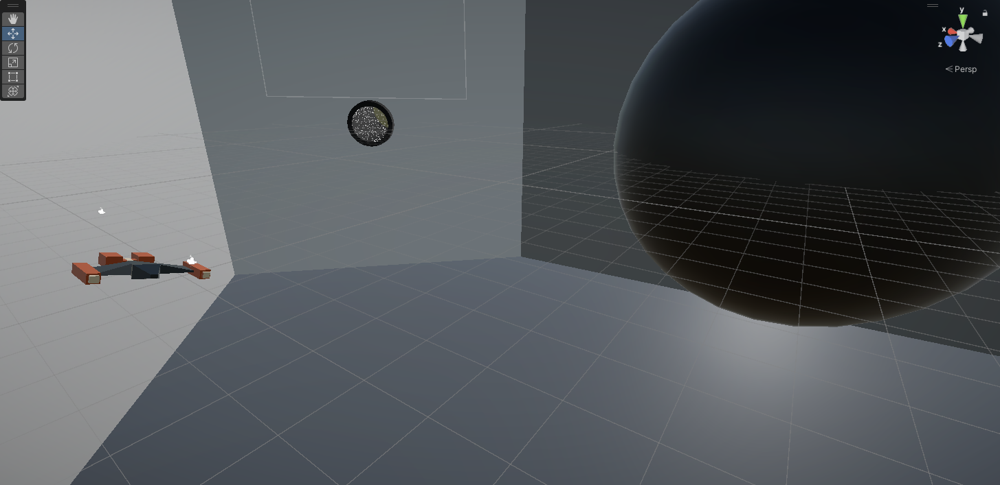

Date of Creation: July 22, 2024
| Stolbovoy Dennis Victor | ||||
|---|---|---|---|---|
| Home | Portfolio | Game | ||||
|  | Space Cart | Spring 2024 | Ibaraki, Japan | In this project, I did the majority of the coding (in C#) and scene setup for a game that our group called Space Cart in around two months. This game, put simply, was Mario Cart in space. All movement was acceleration based, and there were items such as boost items, bombs, as well as a black hole. |
|
Taekwondo 3rd Degree Black Belt | 2022 | Maryland, USA | I have been doing Taekwondo since I was a child. I started when I was around 7 years old, and didn't get my first black belt until freshman year of high school. It would take me another 6 to 7 years to get my third degree black belt. |
| 日本語 | Japanese Proficiency | 2022-2023 | United States/Japan | I've studied the Japanese language since 2020 in order to fill time created by the Coronavirus Pandemic. I grew to love the language and Japanese culture, and am aiming to get N1 certification in the near future. I can converse comfortably in Japanese in casual settings, and some technical ones. |
|
Taekwondo Instructor | 2017-2024 | Maryland, USA | Soon after getting my first degree black belt in Taekwondo, I was asked by the owner and master of my dojang to become an instructor. I've continued for as long as I can since then, and have become the most senior instructor in the dojang under the owner/master. |
| 日本文化 | Japanese Club | 2023-2024 | Maryland, USA | In the Spring of 2023, I founded the Japanese Culture Club in my local community college. I acted as president for two semesters, coordinating activities like a trip to the Sakura Festival in Washington D.C, karaoke, Japanese calligraphy, and Japanese language practice. |
|
My LinkedIn
Date of Creation: July 22, 2024
|
||||